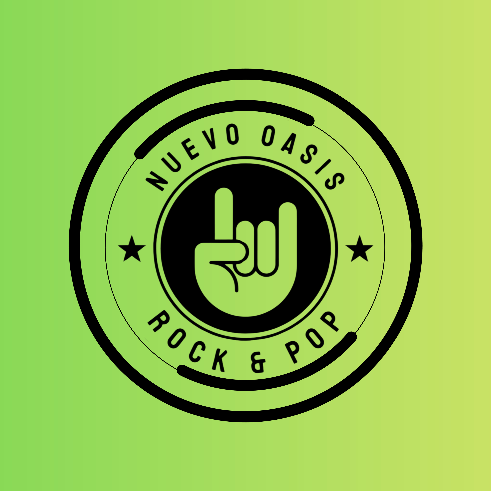

Radio Nuevo Oasis presenta
Con Mhitzy Chriss
Los grandes éxitos del rock & pop que marcaron generaciones, todos juntos en un solo programa.
Escuchar el programa
Dale play al primer episodio completo.
Rocking Hits · Programa #01
Con Mhitzy Chriss · Radio Nuevo Oasis
Un recorrido por los grandes éxitos del rock y pop de los 80s, 90s y 2000s.
Canciones que marcaron una época, definieron generaciones y todavía forman parte de nuestra historia.
Una radio dedicada al rock & pop que nos acompañó ayer y que seguimos escuchando hoy.
Aquí encontrarás canciones, recuerdos y esos hits que nunca dejarán de sonar.